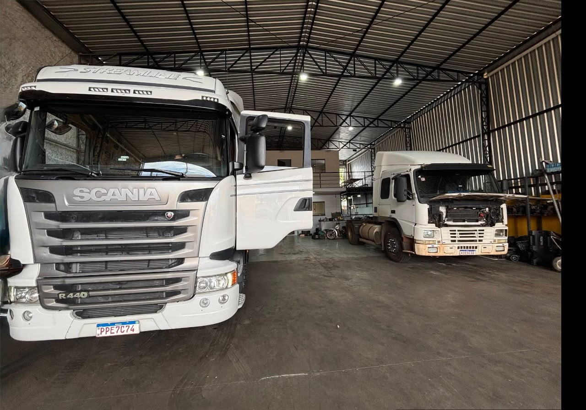
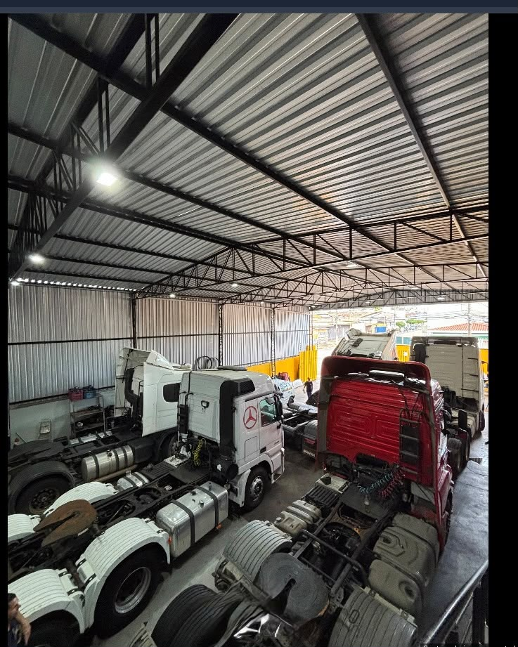

Freios a ar
Manutenção do sistema de freio a ar para caminhões.
ESPECIALISTA EM FREIOS A AR · CAMPINAS
Cuícas, compressores, pinças e válvulas. Atendimento especializado em Campinas para quem dirige um caminhão ou cuida de uma frota.
Agendamento recomendado. Combine sua visita com a equipe.
4,6 / 550 avaliações no Google
Campinas, SPJardim Aparecida
Combine sua visitaAgendamento recomendado
01 / ESPECIALIDADES
Atendimento especializado nos componentes do freio a ar. Converse com a equipe sobre a necessidade do seu caminhão.
Manutenção do sistema de freio a ar para caminhões.
Serviços em cuícas do sistema de freio a ar.
Atendimento em compressores do sistema de ar do caminhão.
Serviços em pinças de freio para caminhões.
Serviços em válvulas de freio a ar para caminhões.
Tem uma dúvida sobre o freio do seu caminhão?
Conversar pelo WhatsApp02 / A OFICINA
A Car Freios é uma oficina em Campinas especializada em freios a ar, cuícas, compressores, pinças e válvulas. Para quem dirige um caminhão ou cuida de uma frota, o primeiro passo é conversar com a equipe e combinar a visita.


O ESPAÇO REAL
Toque nas imagens para ampliar e explorar os três registros.
Interior · Google Maps03 / AVALIAÇÕES
A nota geral da oficina, reunida em 50 avaliações.
04 / SUA VISITA
CONTATO DIRETO COM A OFICINA
Conte à equipe o que você precisa e combine seu atendimento.